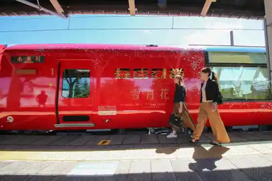
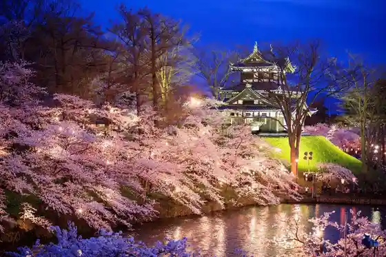
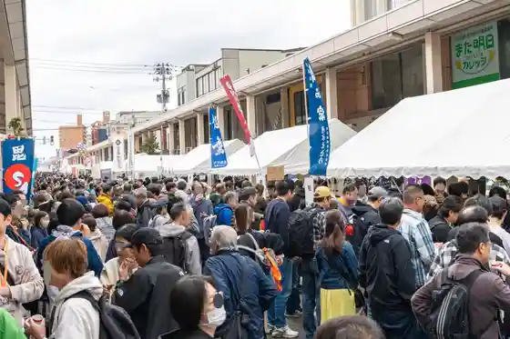
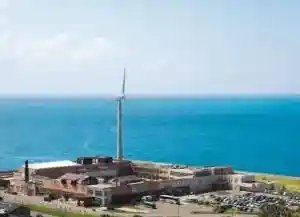

Echigo Toki Meki Resort Yuki Gekka
Joetsu, Niigata · 025-543-8988 · Official / source link

Kasuga Yama Castle Ruins
Joetsu, Niigata · Official / source link
Takada Castle Park
Joetsu, Niigata · 025-526-5111 · Official / source link

Dai 20 Kai Echigo Kenshin SAKE Festival 2025
Joetsu, Niigata · 025-521-2627 · Official / source link

Umiterasu Nadachi
Joetsu, Niigata · 025-531-6300 · Official / source link

Myoko Sanshain Land
Joetsu, Niigata · 0255-75-5122 · Official / source link
Kyu Hi Shi Jitenshado
Joetsu, Niigata · 025-523-3136 · Official / source link
Kasuga Yama Shrine
Joetsu, Niigata · 025-525-2010 · Official / source link
Joetsu Ritsu Suizoku Museum
Joetsu, Niigata · 025-543-2449 · Official / source link
Kazamaki Shrine
Joetsu, Niigata · 025-532-2120 · Official / source link
Hikarigahara Highlands
Joetsu, Niigata · 0255-78-2141 · Official / source link
U no Hama Onsen
Joetsu, Niigata · 025-534-4465 · Official / source link
Matsugamine Shuhen no Sakura to Myoko Yama
Joetsu, Niigata · Official / source link
Yoneyama
Joetsu, Niigata · 025-536-6707 · Official / source link
Iwa no Hara Budo Sono
Joetsu, Niigata · 025-528-4002 · Official / source link
O Kami Gaku Supasuraida (Bobusure)
Joetsu, Niigata · 025-547-2221 · Official / source link
Ogata Campground
Joetsu, Niigata · 025-534-4465 · Official / source link
Gangi Tori
Joetsu, Niigata · 025-520-5629 · Official / source link
Amata Shrine
Joetsu, Niigata · 025-543-4354 · Official / source link
U no Hama Beach
Joetsu, Niigata · 025-534-4465 · Official / source link
Shiisaido Park Nadachi
Joetsu, Niigata · Official / source link
Yuttari no Sato (Nagamine Onsen)
Joetsu, Niigata · 025-548-3911 · Official / source link
Naoetsu Beach
Joetsu, Niigata · 025-543-2777 · Official / source link
Naoetsu D51 Reru Park
Joetsu, Niigata · 025-520-5551 · Official / source link
Kitadai Budo Sono (Chokubai no Mi)
Joetsu, Niigata · 025-532-3260 · Official / source link
Rinsen Tera
Joetsu, Niigata · 025-524-5846 · Official / source link
Kenshin Ko no Kachidoki Meshi
Joetsu, Niigata · 025-543-2777 · Official / source link
Tanihama Beach
Joetsu, Niigata · 025-543-2777 · Official / source link
Naoetsu Yatai Hall
Joetsu, Niigata · 025-545-5155 · Official / source link
Kasuga Yamashiro Shiseki Plaza Kasuga Yamashiro Ato Mo no Gatari Kan
Joetsu, Niigata · 025-544-3728 · Official / source link
Jofuku Tera
Joetsu, Niigata · 025-536-2532 · Official / source link
Kakizaki Chuo Beach
Joetsu, Niigata · Official / source link
Joetsu Science Museum
Joetsu, Niigata · 025-544-3939 · Official / source link
Takada Sekai Kan
Joetsu, Niigata · 025-520-7626 · Official / source link
Notemburo Shichi Fuku Baths Joetsu Mise
Joetsu, Niigata · 025-521-4126 · Official / source link
Takada Shiro Mie Yagura
Joetsu, Niigata · 025-524-3120 · Official / source link
Joetsu Kaiyo Fisshingu Center
Joetsu, Niigata · 025-520-5759 · Official / source link
Kanaya Yama Park
Joetsu, Niigata · Official / source link
Eshin no Sato Yasuragi So
Joetsu, Niigata · 0255-78-4833 · Official / source link
Yoneyama Mizuno Rindo Tozanguchi
Joetsu, Niigata · 025-536-9042 · Official / source link
Roadside Station (Yuki no Furusato Yasuzuka) (Kokudo 403 Go)
Joetsu, Niigata · 025-595-1010 · Official / source link
Namba Kogen Campground
Joetsu, Niigata · Official / source link
Ningyoden Setsu Park
Joetsu, Niigata · Official / source link
Ni Shichi no City
Joetsu, Niigata · 025-520-5741 · Official / source link
Funami Park
Joetsu, Niigata · 025-526-5111 · Official / source link
Amatagahama (Shinran Seijin Joriku no Chi)
Joetsu, Niigata · 025-520-5740 · Official / source link
U no Hinjin Sakana Kan (Onsen to Puru)
Joetsu, Niigata · 025-534-6211 · Official / source link
Choka Koryu Kan Takada Sho Town
Joetsu, Niigata · 025-526-8103 · Official / source link
Kanaya Yama Ski Area
Joetsu, Niigata · 025-525-4295 · Official / source link
Kyushi Dancho Kansha
Joetsu, Niigata · 025-526-5903 · Official / source link
Kakizaki Castle Ruins
Joetsu, Niigata · 025-536-6707 · Official / source link
Shi Kyu no City
Joetsu, Niigata · 025-520-5741 · Official / source link
Oike Ikoi no Mori Bijita Center
Joetsu, Niigata · 025-530-3160 · Official / source link
Gochi Rekishi no Sato Hall
Joetsu, Niigata · 025-543-3222 · Official / source link
Roadside Station Yoshikawa Toji no Sato
Joetsu, Niigata · 025-548-2331 · Official / source link
Gochi Kokubunji
Joetsu, Niigata · 025-543-3069 · Official / source link
Kitaguni Kaido Kaga Kaido
Joetsu, Niigata · 025-545-9269 · Official / source link
Joetsu Ritsu History Museum
Joetsu, Niigata · 025-524-3120 · Official / source link
Asahi Ike
Joetsu, Niigata · 025-534-6190 · Official / source link
Suruten (Surume no Tenpura)
Joetsu, Niigata · 025-543-2777 · Official / source link
San Hachi no City
Joetsu, Niigata · 025-520-5741 · Official / source link
Experience Koryu Shisetsu Soba Tokoro Itakura Tei
Joetsu, Niigata · Official / source link
Kasuga Shrine
Joetsu, Niigata · 025-525-2010 · Official / source link
Kubiki Shuzo (Kabu) / (Kyu Hi Shi)
Joetsu, Niigata · 025-536-2329 · Official / source link
Fukuhei Campground
Joetsu, Niigata · 090-3343-8856 · Official / source link
Joetsu Kiyosato Hoshi no Furusato Kan
Joetsu, Niigata · 025-528-7227 · Official / source link
Seaside Park
Joetsu, Niigata · 025-526-5111 · Official / source link
O Kami Gaku
Joetsu, Niigata · 025-548-2311 · Official / source link
Yasuzuka Furawarodo
Joetsu, Niigata · 025-592-2004 · Official / source link
Oike Ikoi Forest
Joetsu, Niigata · 025-530-3160 · Official / source link
Tanihama Park
Joetsu, Niigata · 025-526-5111 · Official / source link
Gochi Park
Joetsu, Niigata · 025-526-5111 · Official / source link
Hishigagaku Hishigagaku Green Park Tozanguchi
Joetsu, Niigata · 025-595-1010 · Official / source link
Maki Yu no Satomi Sanso
Joetsu, Niigata · 025-533-6785 · Official / source link
Yukidaruma Onsen Kyu Hi Shi no
Joetsu, Niigata · 025-593-2041 · Official / source link
Sakaki Shrine
Joetsu, Niigata · 025-523-5276 · Official / source link
Shobu Highlands
Joetsu, Niigata · 025-594-2030 · Official / source link
Torigakubi Misaki Lighthouse
Joetsu, Niigata · Official / source link
Kyupittobarei Ski Area
Joetsu, Niigata · 025-593-2041 · Official / source link
Kuwadori Yu Ttari Village
Joetsu, Niigata · 025-541-2611 · Official / source link
Arurun Hatake
Joetsu, Niigata · 025-525-1183 · Official / source link
Suitchibakku no Eki Echigo Toki Meki Tetsudo (Kabu) Nihongi Eki Kissa
Joetsu, Niigata · 0255-74-2455 · Official / source link
(Shi) Takeda Shuzo Mise / (Katafune)
Joetsu, Niigata · 025-534-2320 · Official / source link
Yoshikawa Toji no Sato
Joetsu, Niigata · 025-548-2331 · Official / source link
(Kabu) Musashino Shuzo / (Sukii Masamune)
Joetsu, Niigata · 025-523-2169 · Official / source link
Setchu Chozo Shisetsu Yuki no Hako
Joetsu, Niigata · 025-599-2302 · Official / source link
Ogata Shiisaidoasurechikku (Ogata Yagaikatsudo Shisetsu)
Joetsu, Niigata · 025-534-4465 · Official / source link
Sugawara Shrine
Joetsu, Niigata · 025-528-7075 · Official / source link
Tanada Fukei (Maki Ku)
Joetsu, Niigata · 025-533-5141 · Official / source link
Joetsu Maizo Bunkazai Center
Joetsu, Niigata · Official / source link
Sakaguchi Memorial Museum
Joetsu, Niigata · 025-530-3100 · Official / source link
Riijon Plaza Joetsu
Joetsu, Niigata · 025-544-2122 · Official / source link
Otate Park (Otate Ato)
Joetsu, Niigata · 025-520-5740 · Official / source link
Ogawa Mimei Literature Museum
Joetsu, Niigata · 025-523-1083 · Official / source link
Nippon Sukii Hassho Memorial Museum
Joetsu, Niigata · 025-523-3766 · Official / source link
SAKURA Plaza
Joetsu, Niigata · Official / source link
Myuze Yuki Sho Town
Joetsu, Niigata · 025-521-4025 · Official / source link
Kyu Imai Somemono Ya
Joetsu, Niigata · 025-520-9788 · Official / source link
Matsugamine
Joetsu, Niigata · 0255-78-2141 · Official / source link
Itayama Fudo Mikoto
Joetsu, Niigata · 025-594-3101 · Official / source link
Kogen Tera
Joetsu, Niigata · 025-543-4263 · Official / source link
Ichigo no Hana Kotoba
Joetsu, Niigata · 090-5453-2051 · Official / source link
Niigata Prefectural Ogata Mizu to Mori Park
Joetsu, Niigata · 025-534-6190 · Official / source link
Yuki Daruma Bussan Kan
Joetsu, Niigata · 025-595-1010 · Official / source link
Mi Kan Castle Ruins
Joetsu, Niigata · 0255-78-2141 · Official / source link
Myoko Shuzo (Kabu) / (Myoko Yama)
Joetsu, Niigata · 025-522-2111 · Official / source link
Ichi no Nichi City
Joetsu, Niigata · Official / source link
Takada Machikado Koryu Kan (Kyu Daishiginko Takada Branch)
Joetsu, Niigata · 025-526-6903 · Official / source link
Eshin no Sato Memorial Museum
Joetsu, Niigata · 0255-81-4541 · Official / source link
Raion Zo no Aru Kan (Kyu Naoetsu Ginko)
Joetsu, Niigata · 025-544-6238 · Official / source link
Echigo Joetsu Kenshin Ko to Kasuga Yamashiro Ten
Joetsu, Niigata · 025-520-5740 · Official / source link
O Kami Gaku O Kami Gaku Tozanguchi
Joetsu, Niigata · 025-548-2311 · Official / source link
Tanada Fukei (Oshima Ku)
Joetsu, Niigata · 025-594-3101 · Official / source link
Mushi Kawa no Dai Sugi
Joetsu, Niigata · 025-599-2302 · Official / source link
O Kami Gaku Sukaisupotsueria
Joetsu, Niigata · 080-1197-5974 · Official / source link
Hitoshi Ue Hotaru Park
Joetsu, Niigata · 090-4671-1147 · Official / source link
Oshima Aozora Market
Joetsu, Niigata · 025-594-3257 · Official / source link
Hayashi Tominaga Tei
Joetsu, Niigata · 025-532-2602 · Official / source link
Shin'etsu Toreiru (Oshima Ku)
Joetsu, Niigata · Official / source link
Kinoshita Art Museum
Joetsu, Niigata · 025-530-4155 · Official / source link
Kama Futa Iseki Gaidansu
Joetsu, Niigata · 025-520-7166 · Official / source link
Hitoshi Ue Hotaru Midai
Joetsu, Niigata · 090-4671-1147 · Official / source link
Kyu Kanetsu Kentaro Oke Mise
Joetsu, Niigata · 025-520-5629 · Official / source link
Kirigagaku
Joetsu, Niigata · 025-599-2302 · Official / source link
Katagai Jomon Museum
Joetsu, Niigata · 0255-74-4404 · Official / source link
Nagamine Ike
Joetsu, Niigata · 025-536-6707 · Official / source link
Kobayashi Kokei Kinen Art Museum
Joetsu, Niigata · 025-523-8680 · Official / source link
Anju to Zushio no Kuyo to
Joetsu, Niigata · Official / source link
Sukaitopia Yu Land
Joetsu, Niigata · 025-547-2221 · Official / source link
Ogawa Mimei Seitan no Chi
Joetsu, Niigata · 025-520-5628 · Official / source link
Heiwa Memorial Park Tenjikan
Joetsu, Niigata · 025-520-5681 · Official / source link
Hitobashira Kuyo Do (Sokushin Hotoke)
Joetsu, Niigata · 0255-78-2141 · Official / source link
Hosaka Tei
Joetsu, Niigata · 080-5484-5725 · Official / source link
Mikuni Kaido
Joetsu, Niigata · 025-592-2003 · Official / source link
Takahashi Magozaemon Shoten
Joetsu, Niigata · 025-524-1188 · Official / source link
Gochi Campground
Joetsu, Niigata · 025-530-7877 · Official / source link
Kyanpusaito
Joetsu, Niigata · 025-593-2041 · Official / source link
Joetsu Shuzo (Kabu) / (Echigo Bijin)
Joetsu, Niigata · 025-528-4011 · Official / source link
Iwadono Yama Mei Sei In
Joetsu, Niigata · 025-543-9800 · Official / source link
Omae Shimizu (Gozenshimizu)
Joetsu, Niigata · 025-526-5111 · Official / source link
Yo Jii Shimizu (Yoyashimizu)
Joetsu, Niigata · 025-543-3069 · Official / source link
Bogaike Kohan Park
Joetsu, Niigata · 0255-78-2141 · Official / source link
Shin'etsu Toreiru (Yasuzuka Ku)
Joetsu, Niigata · Official / source link
Echigo Joetsu Uesugi Omotenashi Busho Tai
Joetsu, Niigata · 025-543-2777 · Official / source link
Shin'etsu Toreiru (Itakura Ku)
Joetsu, Niigata · Official / source link
Ohazama Castle Ruins
Joetsu, Niigata · 025-532-2323 · Official / source link
Maejima Memorial Museum
Joetsu, Niigata · 025-524-5550 · Official / source link
Izumi Jomon Park
Joetsu, Niigata · 0255-74-2692 · Official / source link
Sukaitopia Yu Land Experience Koryu Center
Joetsu, Niigata · 025-547-2221 · Official / source link
Jo Zen Tera
Joetsu, Niigata · 025-536-2503 · Official / source link
Iwaya Do Kannon Do
Joetsu, Niigata · Official / source link
Joetsu BMX Ba
Joetsu, Niigata · Official / source link
Yoko Yoshitomo Memorial Museum
Joetsu, Niigata · Official / source link
Kizzusukii Tour / Kyupittobarei
Joetsu, Niigata · 025-543-4133 · Official / source link
Mushi Kawa Castle Ruins Park
Joetsu, Niigata · 025-599-2302 · Official / source link
Jo Kyo Tera
Joetsu, Niigata · 025-524-5970 · Official / source link
Shugi Sono Takimoto Tei
Joetsu, Niigata · Official / source link
Ko Betsuin
Joetsu, Niigata · 025-543-2742 · Official / source link
Seizen Tera Dam
Joetsu, Niigata · 025-525-8790 · Official / source link
Kuwadori City Tami Forest
Joetsu, Niigata · 090-5775-1208 · Official / source link
Hironori Shimizu Nature Park
Joetsu, Niigata · 0255-78-2141 · Official / source link
Kubiki Ushi
Joetsu, Niigata · 025-524-0002 · Official / source link
Satoyama Wo Mankitsu ! Hoshi Toge no Tanada Uoku Entoriikosu
Joetsu, Niigata · 025-755-5080 · Official / source link
Shin'etsu Toreiru (Maki Ku)
Joetsu, Niigata · Official / source link
Choku Mine Castle Ruins
Joetsu, Niigata · 025-592-2003 · Official / source link
O Ko Sama no Egaakusesarii Ni ! Shirubaakusesarii Oyako Seisaku Puran
Joetsu, Niigata · 080-2386-5116 · Official / source link
Yamamoto Budo Sono
Joetsu, Niigata · 090-4376-5758 · Official / source link
Karigane Castle Ruins
Joetsu, Niigata · 025-530-2311 · Official / source link
Megisu
Joetsu, Niigata · 025-543-2777 · Official / source link
Maki Furusato Mura Nature to Kei Forest
Joetsu, Niigata · 025-533-5603 · Official / source link
Hijiri no Kutsu
Joetsu, Niigata · 0255-78-2141 · Official / source link
O Suki Na Dezain De Ringu Haba no Aru Boryumuringu Seisaku
Joetsu, Niigata · 080-2386-5116 · Official / source link
Joetsu Resort Center Kurumi Kazoku Sono
Joetsu, Niigata · 025-544-7440 · Official / source link
Oshima Shoya no Ie
Joetsu, Niigata · 025-594-3848 · Official / source link
Hitoshi Ue no Hotaru
Joetsu, Niigata · 025-594-3101 · Official / source link
Mizushina Kofun Gun
Joetsu, Niigata · 025-532-2323 · Official / source link
Chausuyama Castle Ruins Park
Joetsu, Niigata · 025-530-2311 · Official / source link
Tojitsu Ji Kaeri Ka ! Shiruba 925 Shiyo no Pendanto Seisaku
Joetsu, Niigata · 080-2386-5116 · Official / source link
Chikyukankyo Gakko
Joetsu, Niigata · Official / source link
Sugita Miso Ya
Joetsu, Niigata · Official / source link
Iwa no Hara Budo Sono Gaido Tour
Joetsu, Niigata · 025-528-4002 · Official / source link
Tojitsu Mochikaeri Ka ! Shiruba 925 Shiyo no Shinpururingu Seisaku
Joetsu, Niigata · 080-2386-5116 · Official / source link
Kyogagaku Castle Ruins
Joetsu, Niigata · 025-528-3111 · Official / source link
JA Echigo Joetsu Uragawara Bussan Kan
Joetsu, Niigata · 025-599-2387 · Official / source link
Tokoroten no Mizu (Tokoroten no Mizu)
Joetsu, Niigata · 025-594-3101 · Official / source link
Shoshinsha Daikangei ! Te Burade Tanoshi Meru Funazuri Taiken De Kaisuigyo no Osama Madai Wo Nerao U !
Joetsu, Niigata · 025-543-8316 · Official / source link
Natsukashi no Gakko, Natsukashi no Inaka Ryori
Joetsu, Niigata · 025-592-3988 · Official / source link
Maki Fureai Taiken Koryu Shisetsu
Joetsu, Niigata · 025-529-3150 · Official / source link
Yoko Shimizu (Yokoshimizu)
Joetsu, Niigata · 025-526-5111 · Official / source link
Maki Folk History Museum
Joetsu, Niigata · 025-533-5117 · Official / source link
Paraguraida Futarinori Ri Yuranhiko
Joetsu, Niigata · 080-1197-5974 · Official / source link
Yokoso Nadachi He (Shukuhaku Shinsen Sen Sakana Kaiseki Puran)
Joetsu, Niigata · 025-531-6303 · Official / source link
Maira Reyo ! (Warera Gao Yakatasama) Uesugikenshin Ko no Kyojo Kasuga Yamashiro He
Joetsu, Niigata · 025-543-2777 · Official / source link
Shinkansen Wo Ori Tara 3 Fun De Yayoijin
Joetsu, Niigata · 025-520-7166 · Official / source link
Setchu Chozo Shisetsu Yuki no Hako
Joetsu, Niigata · 025-599-2302 · Official / source link